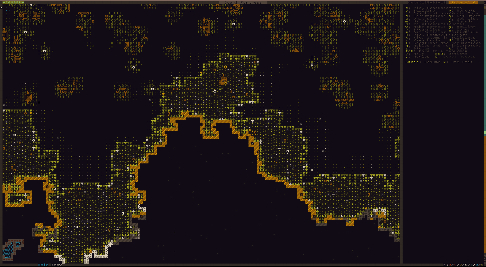
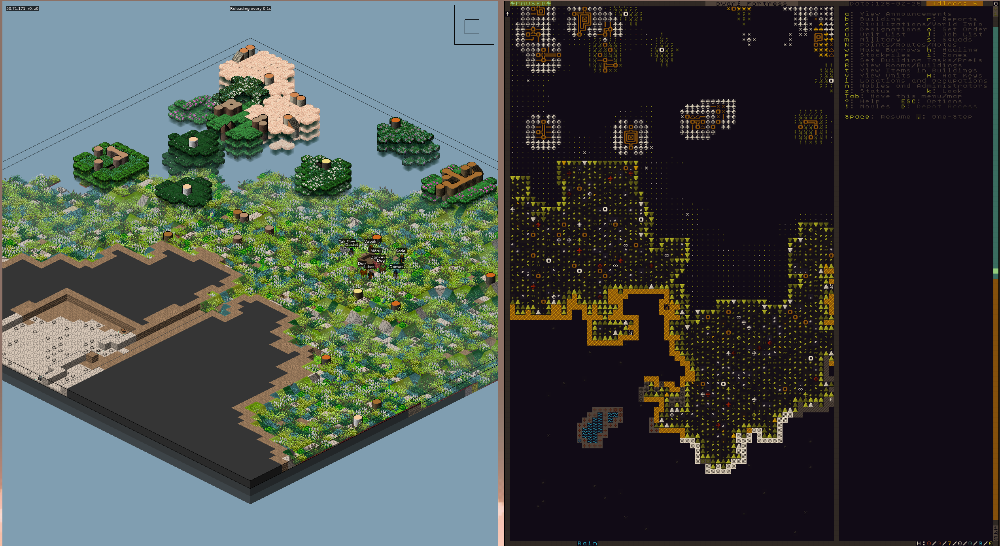

dwarf-fortress
Dwarf Fortress is game with old looking ASCII graphics, procedurally generated worlds, characters and lore. What's not to love about it.
Changing the tileset

The original tileset hurts my eyes so I switched to Wanderlust
Steps:
- Download the archive.
- Unzip.
- Overwrite
dataandrawin~/.dwarffortresswith the downloaded ones.
Hot Keys

Most keys are shown on the sidebar but it's good to call them out here.
tabto change the screen layoutmouse wheel scrollto zoom layout in and outspaceto pause and resumekto use arrow keys to look aroundarrow keysmove cursor<move up one layer up and>move down one layer. dwarf fortress is a 2D representation of 3D gameF1center on embark pointddesgination i.e. pick job to doenterto start selection of area of designaion and enter again to close selection-/+navigating between links~DFHack if you have it installed
external sources
- dwarf fortress with Wanderlust tile set: media/dwarf-fortress.png
- Wanderlust: http://www.bay12forums.com/smf/index.php?topic=145362.0
- stonesense: media/dwarf-fortress-stonesense.png